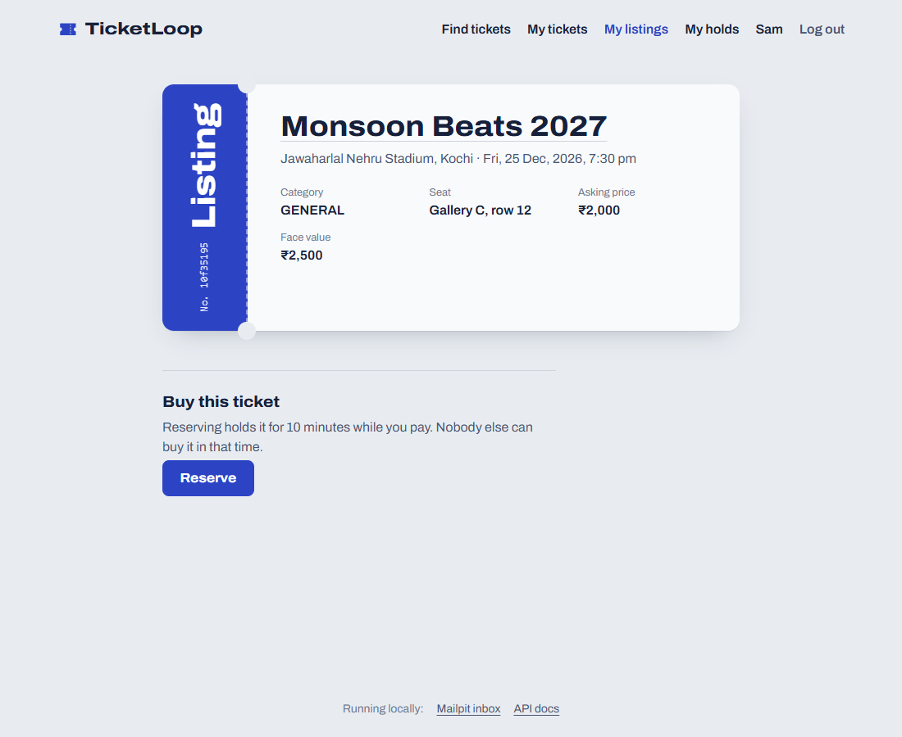
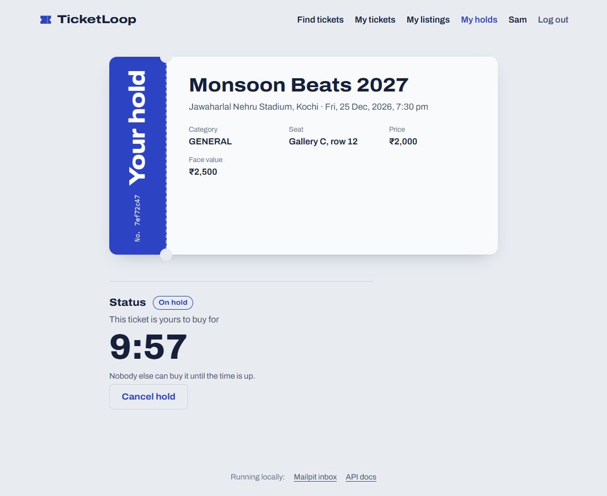

The 30-second answer
Reserving is one transaction at Read Committed. First UPDATE listings SET status = 'RESERVED' WHERE id = :id AND status = 'ACTIVE' …, then the reservation row with an end ten minutes away, then an audit row for each. No earlier read decides anything, so there's no gap for another buyer to get into. The row lock queues everyone else, and Postgres re-checks their WHERE against the committed row and changes nothing.
Under that sits a partial unique index: at most one live reservation per listing. If some future code path forgot the conditional UPDATE, the database would still refuse the second hold.
I tested it the way it fails in production. Four API processes, a hundred real HTTP clients with their own accounts and open connections, released by a barrier, and the outcome read from the database and not from the responses. Twenty rounds in a row, one winner each. I also ran the same race with SELECT … FOR UPDATE and with SERIALIZABLE, so I can say what each costs rather than repeat what a book says.
What I built
- Reserve
POST /listings/{id}/reservations: 201 with a hold, 200 if you already have it, 409 with areason(reserved,sold,expired,hold-ended) otherwise. Sellers can't reserve their own ticket.app/modules/reservations/service.py - Hold pages
GET /reservations/{id},/reservations/me(live ones first) and/cancel. A hold that isn't yours is the same 404 as one that doesn't exist.app/modules/reservations/router.py - One state machine classThe conditional UPDATE, the
ALLOWEDtable and the audit row that M5 wrote for listings are now a class. Listings and reservations each configure one, and M8 will add orders and payments.app/modules/audit/machine.py - Expiry
expire_reservations()claims due holds withFOR UPDATE SKIP LOCKED, a savepoint per row, and releases each listing in the same transaction. It never touches a hold that's being paid for. A loop script runs it every 30 seconds until Celery beat takes over in M9.scripts/expire_reservations.py - ReleaseOne function puts a listing back:
ACTIVE, orEXPIREDif its own end passed while it was held. Cancelling and expiring both go through it.app/modules/listings/service.py - Event cancelRefused with 409
event-has-reservationswhile any ticket is held. Someone may be paying.app/modules/listings/service.py - The race harnessStarts four API processes on a throwaway database, opens every buyer's connection, and releases them together. Checks statuses, reasons, rows, listing status and audit counts in the database.
tests/concurrency/harness.pytests/concurrency/test_reservation_race.py - The comparison
FOR UPDATEandSERIALIZABLEversions of reserve, in the tests and never in the app, raced by the same harness. A report script writes the table.tests/concurrency/strategies.pytests/concurrency/report.pydocs/reservation-design.md - ScreensReserve on a listing, a hold page with a countdown, Cancel hold, My holds, and the seller's history.
frontend/src/pages/ReservationPage.tsxfrontend/src/components/ReserveTicket.tsx
One hundred buyers, one ticket
Four API processes, each with its own connection pool. A hundred requests arrive within a few milliseconds of each other.
- 1Everyone runs the same UPDATE
WHERE id = :id AND status = 'ACTIVE' AND seller_id <> :buyer AND expires_at > now(). The first to reach the row takes its lock. The others wait for it, inside Postgres. - 2The winner finishes its transaction
The audit row for the listing, the reservation with
expires_at = now() + 10 minutes, the audit row for the reservation, commit. The lock is held for those few statements and nothing else: no network call, no Python check between read and write. - 3The waiting UPDATEs wake up
At Read Committed, Postgres re-evaluates each waiting
WHEREagainst the new version of the row. The status isRESERVEDnow, so they match nothing. - 4No row means a question
The service reads the listing once to say why. If this buyer already holds it, 200 with the hold they have, which makes a double-click and a retried request harmless. Otherwise 409
listing-not-availablewithreason: reserved. - 5Most losers never wait at all
Those who arrive after the commit read
RESERVEDstraight away, without a lock. - 6If the code were wrong
A second INSERT would hit
uq_reservations_one_live_per_listing. The insert is in a savepoint, so that becomes the same 409 rather than a 500.
# app/modules/audit/machine.py: every status change in the app
changed = db.execute(
update(Model)
.where(Model.id == row.id, Model.status == seen, *where)
.values(status=to, **values)
).rowcount
if changed != 1:
raise self.changed(...)
record(db, actor_id=actor_id, action=self.action[(seen, to)], ...)What it measured
100 buyers, 4 API processes, 20 rounds per strategy, PostgreSQL 17 in Docker, all on my laptop (16 logical CPUs). Times as the buyer saw them, queueing included. The table is generated into docs/reservation-design.md.
- Conditional UPDATE: p50 340 ms, p95 460 ms, no retries.
SELECT … FOR UPDATE: p50 656 ms, p95 1,192 ms. Every loser takes the lock in turn to read that it lost.SERIALIZABLEwith a retry: p50 436 ms, p95 549 ms, 128 transactions run again over the 20 rounds.- All three ended every round with exactly one winner. The choice is about cost and about how easy each is to get wrong.
Screens
Run docker compose up -d db mailpit minio, the API, and npm run dev in frontend/. Open one listing in two browsers with two accounts and press Reserve in both.
- ReserveOn any listing that's on sale and isn't yours. A guest is asked to log in and comes back to the same ticket.
/listings/:listingId - Your holdThe ticket, a countdown by the server's clock, and Cancel hold.
/reservations/:reservationId - My holdsEvery hold, the live ones first.
/reservations


Decisions
The race
A conditional UPDATE
Instead of SELECT … FOR UPDATE, then check, then write
It's the same lock taken by fewer statements. The check and the write are one statement, so nobody can forget the check, and the lock is held for the shortest time. On my laptop it halved the median and cut p95 by more than half.
Read Committed
Instead of SERIALIZABLE
Serializable is correct and almost as fast here, but every caller must be ready to run its whole transaction again, and forgetting that turns a conflict into a 500. The one invariant I need is about one row, and a row lock covers it.
A Postgres row as the lock
Instead of a lock in Redis
A Redis lock can vanish in a failover or expire during a pause, and Postgres would still have to be asked who won. So it would be a second system that can disagree with the first. Nothing that decides who gets a ticket reads Redis.
A partial unique index as well
Instead of trusting the code
The index costs one small write and turns a future mistake into a refused insert instead of two people with one seat.
200 for the buyer who already holds it
Instead of 409 for everyone else
A double-click, a retry after a lost response and a second tab are all the same buyer asking for what they have. They get it.
Holds
A hold past its end is over at once
Instead of waiting for the job to close it
Between the end and the next pass the row still says CREATED. Returning it as a live hold would promise something that can't be paid for, so reserving again answers hold-ended.
A savepoint per row in the expiry job
Instead of one transaction for the batch
One row that can't expire would otherwise take the other ninety-nine with it, every 30 seconds, forever. Now it's logged and skipped.
The reservation locks before its listing, everywhere
Instead of whichever is handy
Cancel and expiry touch the same two rows. Taking them in one order means they can wait for each other but never deadlock. A transaction that holds several listings takes them in id order, for the same reason.
Refuse to cancel an event with a held ticket
Instead of cancelling the hold too
A hold ends by itself in ten minutes, unless a payment is under way, and that must never be cut off by an admin's click. The cancel locks the RESERVED listings too, so one being reserved at that moment can't slip through.
Proof
Four API processes
Instead of threads in one Python process
A lock in one process's memory would pass a single-process test and protect nothing. Four interpreters share only Postgres.
Check the database, not just the responses
Instead of counting status codes
An oversold ticket with tidy responses is still oversold. Every round checks the rows, the listing and the audit counts.
Break it on purpose
Instead of trusting a green test
A race test can pass because nothing raced. I changed the event cancel to lock only the cancellable listings, and the test failed three times out of three. Then I put it back.
The alternatives live in the tests
Instead of a setting in the app
The app has one way to reserve. A switch would be dead code someone could turn on.
Frontend
Count down by the server's clock
Instead of the browser's
A laptop five minutes fast would show five minutes less than the buyer has. Every response carries a Date, so the page knows the difference.
The page goes by what it can see
Instead of asking every second
The countdown is local arithmetic. It asks again every 30 seconds in case the hold was given up in another tab.
Interview questions
Answer out loud first, then open.
How do you stop two people buying the same ticket?
One conditional UPDATE. UPDATE listings SET status = 'RESERVED' WHERE id = :id AND status = 'ACTIVE' either changes one row or none, and whoever changed it has the ticket. Postgres takes a row lock for the update, so concurrent ones queue, and when the first commits the others re-check their condition against the new row and match nothing. There's no read-then-write in Python, so there's no window. A partial unique index on live reservations per listing backs it up.
What exactly happens to the waiting transactions at Read Committed?
They block on the row lock inside their UPDATE. When the holder commits, Postgres takes the updated row version and re-evaluates the WHERE against it; that's sometimes called EvalPlanQual. If it no longer matches, the row is skipped and the UPDATE reports zero rows. At Repeatable Read the same wait would end in error 40001 instead, because the row changed after the snapshot. If the holder rolls back, the next one in line gets its turn.
Why not SELECT … FOR UPDATE?
It works, and I measured it. The difference is that the check happens in Python, so the lock is held across extra round trips, and every loser has to take the lock in turn just to find out. With 100 buyers the median went from 340 ms to 656 and p95 from 460 ms to 1.2 s. I do use FOR UPDATE where a decision needs several rows to hold still: cancelling an event locks all its open listings, in id order.
And SERIALIZABLE?
Also correct. Postgres tracks what each transaction read and aborts one when the pattern could not have happened one after another; you get 40001 and run it again. It's attractive when an invariant spans many rows. Here it cost about six retries a round and the retry loop has to wrap the whole transaction, so it can't live in a service function. For an invariant on one row it's more machinery than the problem needs.
How do you know the test really races?
Three things. The buyers have their connections open and wait at a barrier, so the requests leave together. The API is four processes, so nothing in one process's memory can serialise them. And I broke the code to see the test fail: with the event cancel locking one status too few, the race test failed every time. A race test can't prove there's no race, it can only fail to find one, so I also say why the code is right.
What if the server dies after the UPDATE and before the INSERT?
They're one transaction, so Postgres rolls both back when the connection drops, and the listing is ACTIVE again. If it dies after the commit but before the response, the hold exists and the buyer doesn't know; they press again and get 200 with it.
How do holds expire, and what if two workers run at once?
A job claims due rows with FOR UPDATE SKIP LOCKED, so two workers pick different rows and neither waits. Each row is expired with a conditional UPDATE on status = 'CREATED' and its listing released in the same transaction. The test runs two workers over sixty due holds and counts audit rows: one reservation.expired each.
What if a hold expires at the moment the buyer cancels?
Both are UPDATE … WHERE status = 'CREATED' on the reservation. One changes a row, and only that one goes on to release the listing; the other gets nothing and stops. The test races them and checks there's exactly one ending and one release.
Why does the expiry job skip holds that are being paid for?
Because money may be moving. The clock knows the ten minutes are up; it doesn't know whether the payment went through. Giving the ticket to someone else and then learning the first buyer paid is the one mistake that can't be undone nicely. From M8 those are settled by asking the payment gateway.
Could cancel and expiry deadlock?
They'd need to take two locks in opposite orders. Both lock the reservation first and the listing second. Reserving goes the other way round, but the reservation it inserts doesn't exist yet, so nobody else can be holding it. The deadlock I did have was elsewhere: one expiry pass holds many listings, and so does an admin cancelling an event. Both now lock listings in id order.
Why 409 and not 404 for the losers?
They were looking at a ticket that was publicly on sale a moment ago, so its existence is no secret, and "someone else is holding it" is useful: it may come back in ten minutes. Drafts and rejected listings were never public, and stay 404.
What does the seller see?
Their listing's history: reserved by a buyer, hold given up by a buyer, hold ran out automatically. A role and never an identity. The reservation itself doesn't say who the buyer is either, because the seller is allowed to read it.
Traps and fixes
- One shared port hung on Windows.
uvicorn --workers 4shares a listening socket between processes, and on Windows a few requests never got an answer, so the barrier timed out. Four processes with a port each gave the same four interpreters and an even spread of buyers. - The test client was the bottleneck. A hundred clients each loading the system's certificate bundle took longer than the race. They only speak plain HTTP, so certificate checking is off and one client per server is shared.
- Event cancel locked the wrong rows. It locked the listings it would cancel, so a listing being reserved at that instant, already
RESERVEDin another uncommitted transaction, was skipped. The result was a cancelled event with a held ticket. It now locksRESERVEDones as well and refuses if it finds any. - Expiry deadlocked with an event change. An expiry pass released listings in the order their holds had ended, while an admin cancelling or moving that event locked them in id order. Each could hold what the other wanted, and the admin got a 500. The test that sets 20 ended holds against each kind of change failed all three ways; locking in id order on both sides fixed it.
- A duel that only one side could win. Two requests released at the same instant gave the same winner every round, so one outcome was never tested. One side now gets a head start that grows each round, and the test fails unless both outcomes turn up.
- A buyer can't read the listing they're holding. A reserved listing is 404 to everyone but the seller and admins, so the hold page would have had nothing to show. The reservation carries the few facts it needs.
- Logging in forgot where you were. Pressing "Log in to reserve" sometimes ended on the account page: the guard that sends logged-in people away from
/loginran before the form's own redirect. There's now one redirect, in the guard, and a browser test for it. - Countdown by the wrong clock. With the browser an hour ahead, every hold looked finished. The page now counts by the
Dateheader, and a browser test sets the server an hour behind.
Known gaps, on purpose
- No paying yet. M8 adds orders and payments; until then a hold can only be given up or run out.
- The expiry loop is a script you run in a terminal. M9 hands it to Celery beat.
- One buyer can hold many tickets at once. Nothing limits it per account yet; M10's rate limits slow it down.
- The race is on one machine. Buyers, API and database share a laptop, so the times compare strategies and say nothing about production speed.
Check it still works
docker compose up -d db mailpit minio
uv run alembic upgrade head
uv run pytest tests/integration/test_reservations.py tests/integration/test_reservation_expiry.py
uv run pytest tests/concurrency # every race, 3 rounds
RACE_ROUNDS=20 uv run pytest tests/concurrency/test_reservation_race.py # the recorded proof
uv run python -m tests.concurrency.report # the comparison, into docs/reservation-design.md
uv run python -m scripts.expire_reservations --once # Expired 0 reservation(s).
REQUIRE_POSTGRES=1 REQUIRE_STORAGE=1 uv run pytest # 722 tests, what CI runs
cd frontend && npm run dev # localhost:5173
npm test # 119 unit tests
npm run e2e # 18 browser tests, 2 for this module
gh run list --workflow ci.yml --limit 3